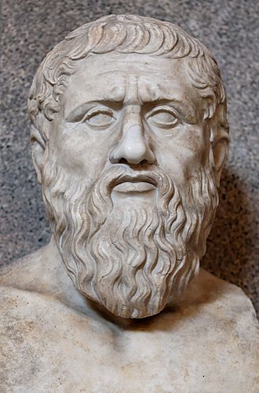

Tributo a Platón

"El objetivo de la educación es la virtud y la meta de convertirse en un buen ciudadano."
TIMELINE
427 a.c.
Nació
407 a.c.
Conoce a Sócrates. Abandona la aspiración de ser dramaturgo y rompe sus poemas.
387 a.c.
Fundación de la Academia en las afueras de Atenas.
385 a.c.
Época de madurez o diálogos críticos: Fedón, Banquete, República, Fedro...
348 a.c.
Fallece Platón.